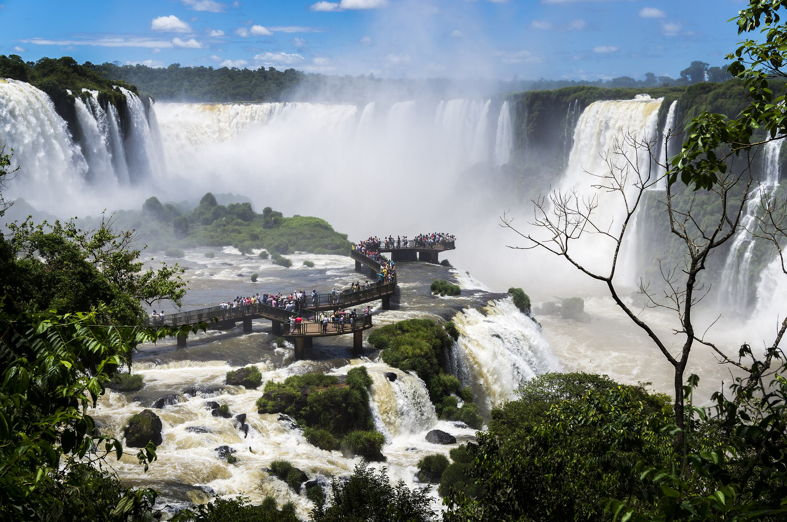
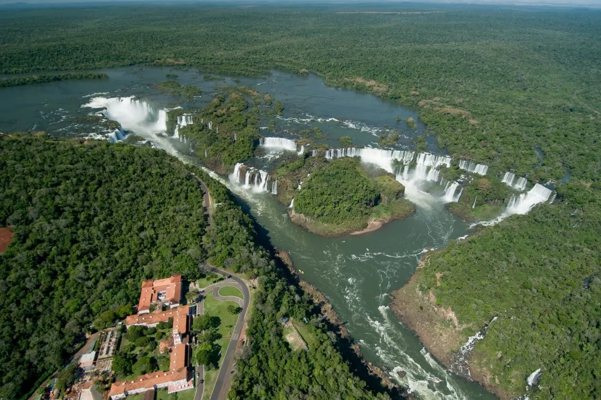
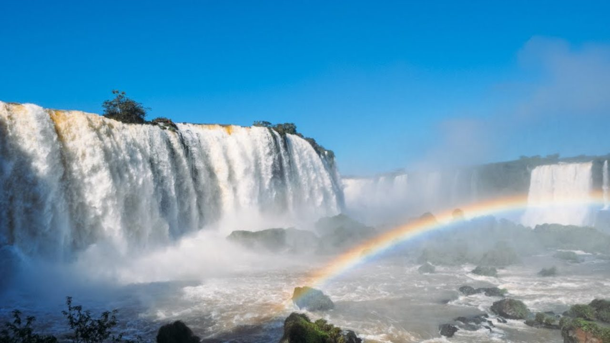

O Parque Nacional do Iguaçu, que abriga as Cataratas do Iguaçu, integra um dos mais importantes corredores verdes do continente.
O Parque Nacional do Iguaçu, no Brasil, e o Parque Nacional Iguazú, na Argentina, integram o mais importante contínuo biológico do Centro-Sul da América do Sul, devido à diversidade biológica e extensão. O Parque possui mais de 600 mil hectares de áreas protegidas e outros 400 mil em florestas ainda primitivas.
O Parque Nacional do Iguaçu é o maior remanescente de floresta Atlântica da região sul do Brasil.
Sua expressiva diversidade biológica somada à paisagem singular das Cataratas do Iguaçu, fizeram do Parque Nacional do Iguaçu a primeira Unidade de Conservação do Brasil a ser instituída como Sítio do Patrimônio Mundial Natural pela UNESCO, no ano de 1986. O Parque Nacional do Iguaçu foi criado em 1939.
A Lenda das Cataratas: uma história de amor entre Naipi e Tarobá.

Há muito tempo, dois índios caingangues, Naipi, filha do cacique, e Tarobá, um jovem guerreiro, se apaixonaram e viveram uma história de amor proibida. O mundo era governado por um deus em forma de serpente, o Mboi. Devido à beleza de Naipi, ele acreditava que a jovem deveria viver exclusivamente para o seu culto. E então, impediu que o casal ficasse junto transformando-os em dois elementos da natureza que podemos observar hoje nas Cataratas.
As Cataratas do Iguaçu são formadas por 275 quedas d’água.

As Cataratas do Iguaçu é um conjunto de 275 quedas d’água de até 80 metros de altura, no Rio Iguaçu. Entretanto, o número das quedas varia de 150 a 300, dependendo da época do ano, principalmente, das chuvas.
A maior fábrica de arco-íris.
O arco-íris é um dos mais belos presentes da natureza. Os ingredientes são simples: luz solar e gotas de água. As tempestades de verão podem provocar cenários surpreendentes, mas o arco-íris nem sempre precisa de chuva para nascer. Nas Cataratas do Iguaçu podemos observar esse fenômeno da natureza a qualquer hora do dia.